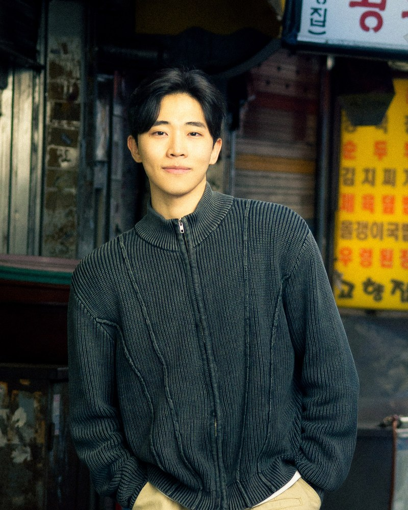
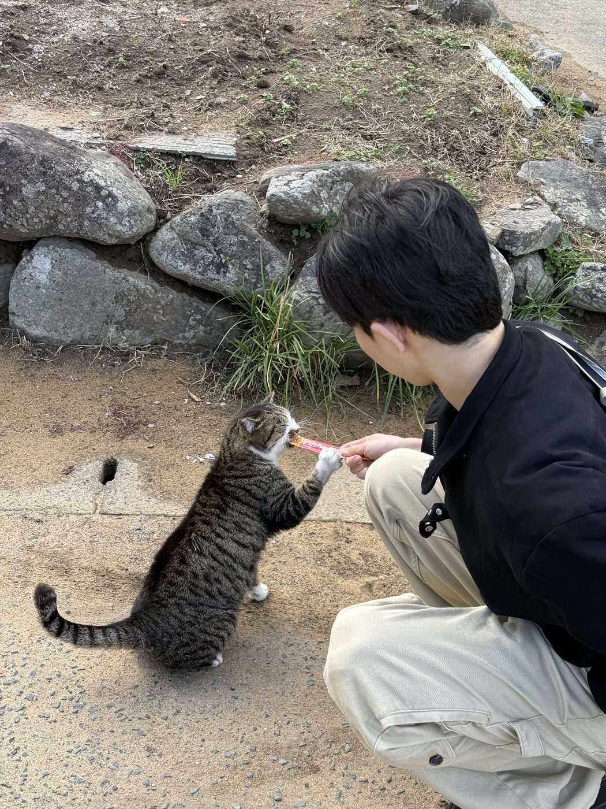
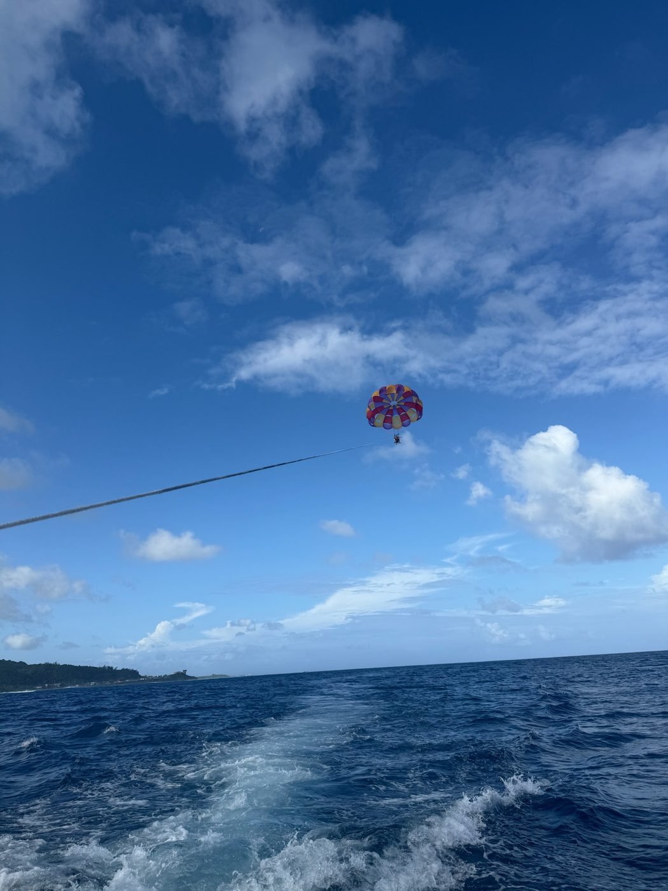
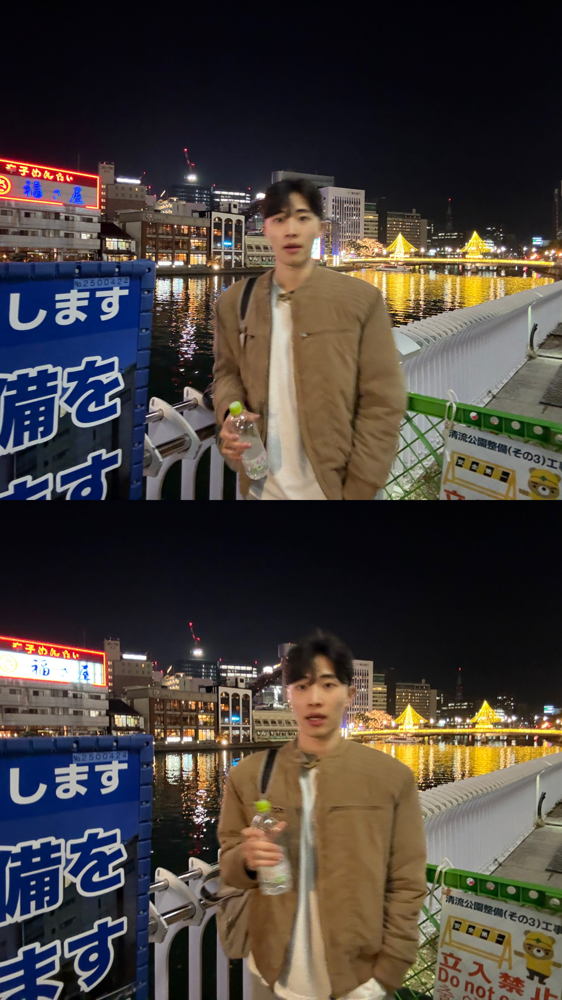
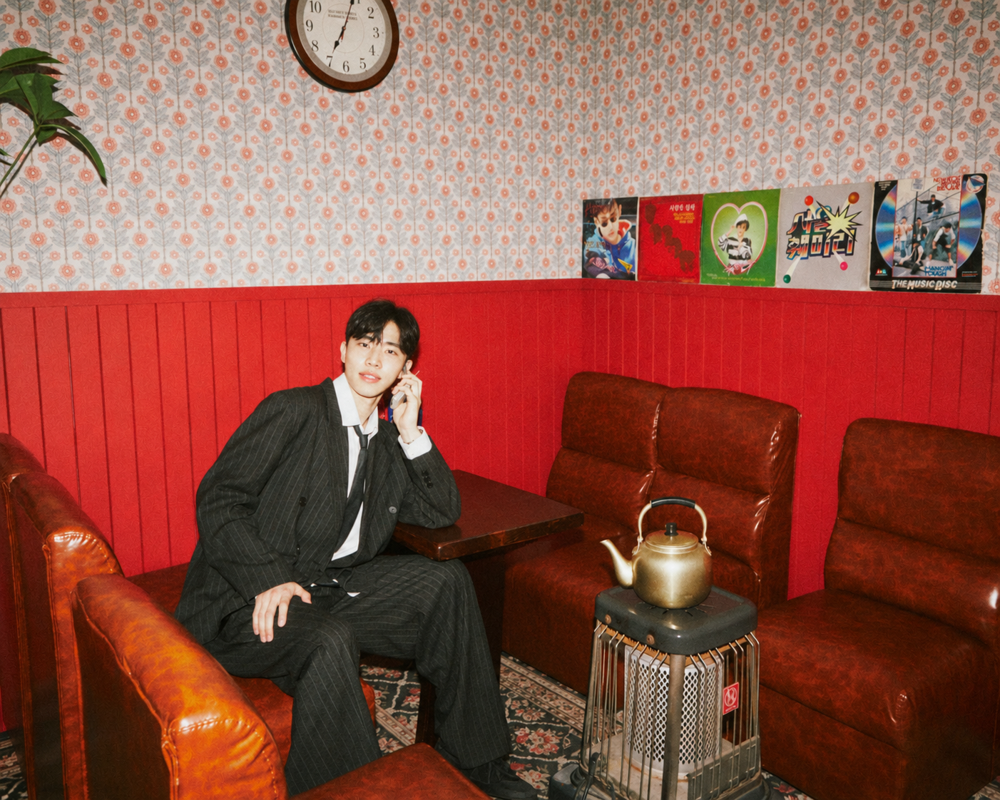

2026–
Undergraduate Researcher, ML3 Lab, Yonsei University
Advisor: Jaehyung Kim
Undergraduate researcher, ML3 Lab, Yonsei University
B.S. student in Computer Science & Life Sciences, Korea University

I study how large language models reason, where they fail, and how they can be adapted without losing what they already know. My recent work covers reward hacking detection, catastrophic forgetting in domain adaptation, and LLM ensembling.
I am pursuing a B.S. in Computer Science & Life Sciences at Korea University (2021–). I am also an undergraduate researcher at the ML3 Lab at Yonsei University, advised by Jaehyung Kim. Before that, I was a research intern at LG AI Research and an undergraduate researcher at KAIST. You can find more information in my CV.
(C: Conference, W: Workshop, P: Preprint, *: Equal contribution)



